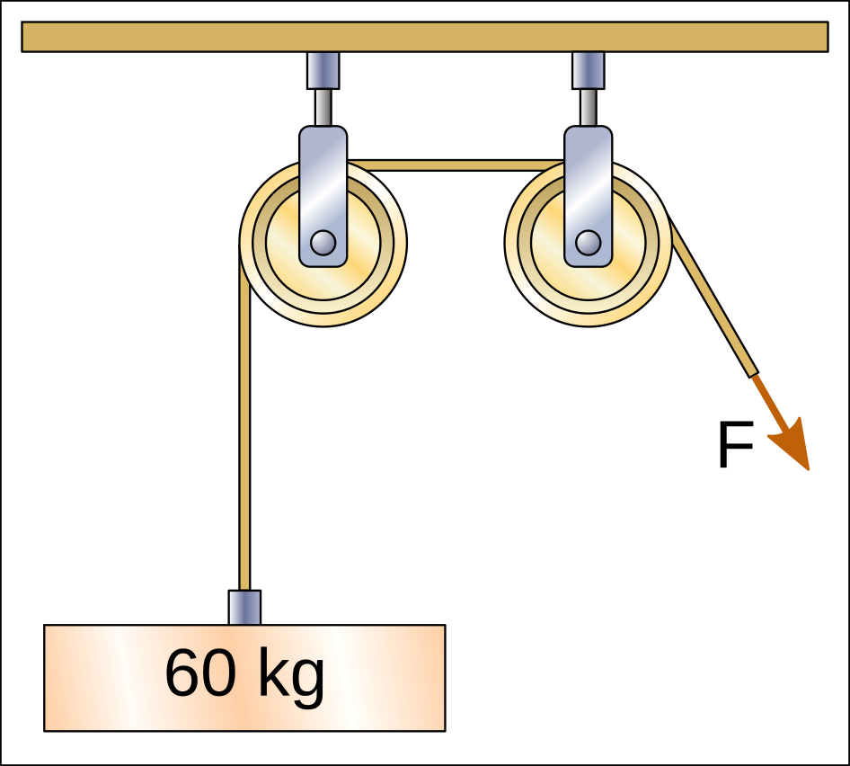
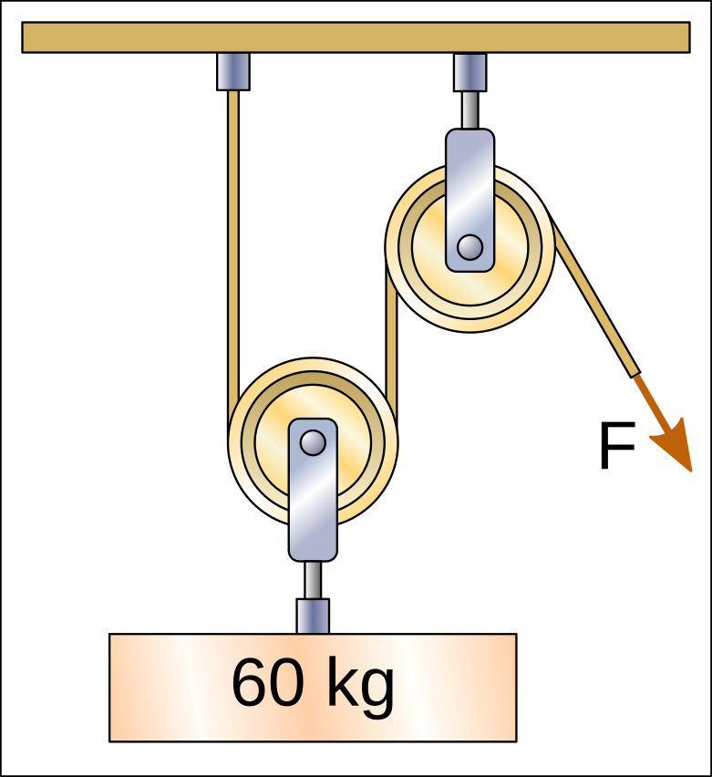
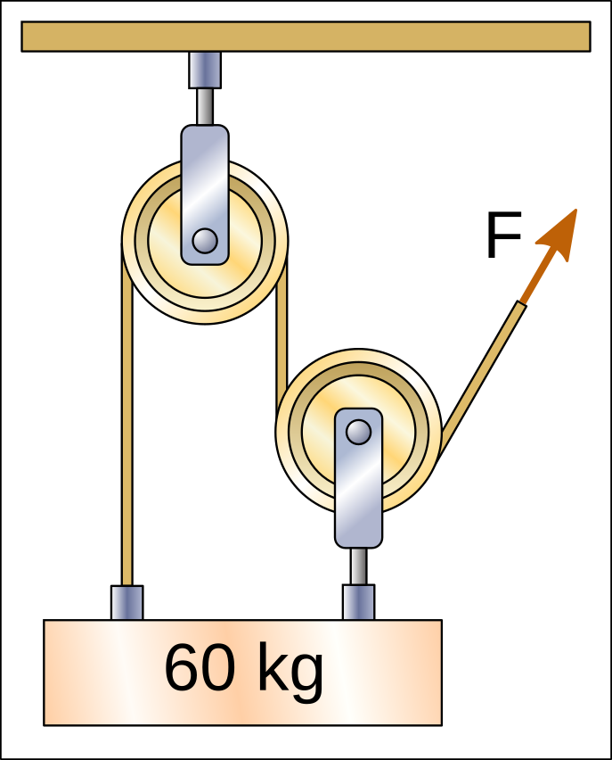
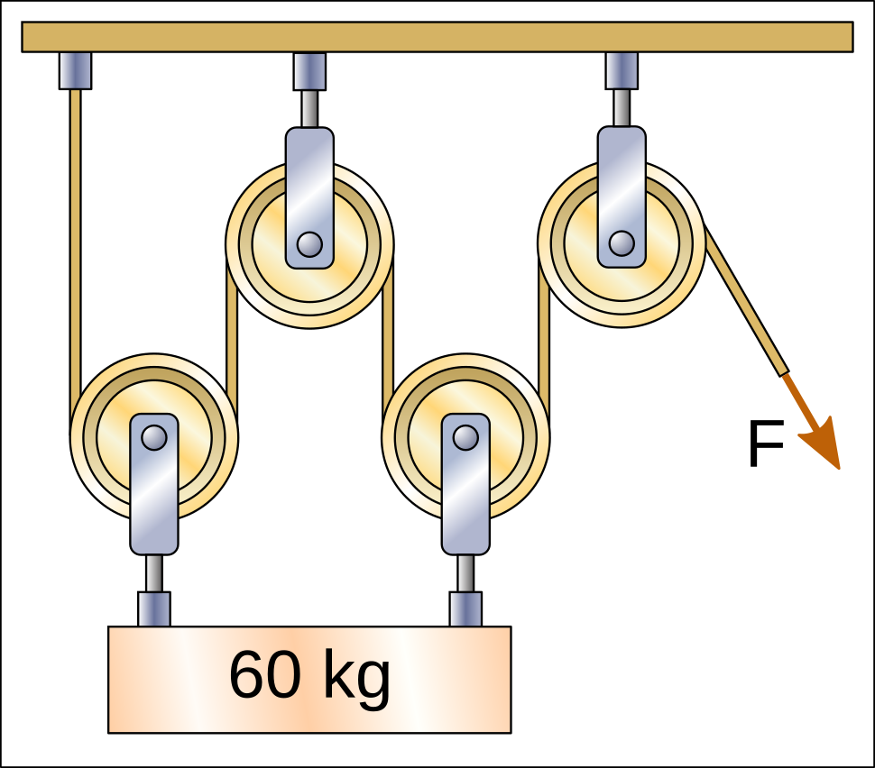

Pulleys and Hoists¶
A pulley is a simple machine made up of a wheel with a groove around it through which a rope passes.
Pulleys are used to lift objects or to change the direction of a force.
Índice de contenidos:
Applications of pulleys¶
The function of a pulley is to change the direction and position of the rope and, therefore, of the applied force.
For example:
- In a well, a pulley allows a bucket of water to be lifted by pulling downwards away from the well edge, which is more comfortable than pulling upwards on the rope.
- In curtains, pulleys allow them to be moved by pulling the cords at hand height, even though the rail is much higher on the ceiling.


{kind=link}

In all these examples, the pulleys only change the direction of the force, but they do not reduce the amount of force needed to lift the weight.
Therefore, to lift a weight of 60 kgf (60 kilogram-force), the rope must be pulled with a force of 60 kgf.
Hoists¶
A hoist is a system made up of at least one movable pulley attached to the weight we want to lift. A hoist provides mechanical advantage, meaning that it allows a weight to be lifted with less force.
To calculate the force needed to lift the weight, the weight must be divided by the number of rope segments pulling the weight upwards.
In the following hoists, there are 2 rope segments pulling the weight upwards and, therefore, the force required to lift the weight is divided between the two segments, resulting in 30 kgf:

{kind=link}

In the following hoists, there are 3 rope segments pulling the weight upwards and, therefore, the force required to lift the weight is divided by three, resulting in 20 kgf.
{kind=link}


In the following hoists, there are 4 rope segments pulling the weight upwards and, therefore, the force required to lift the weight is divided by four, resulting in 15 kgf.

{kind=link}

It must be taken into account that sometimes pulleys are not attached to the weight and, therefore, are not counted when calculating the force with which the rope must be pulled.
In the following hoist, there are 2 rope segments pulling the weight upwards and, therefore, the force required to lift the weight is divided between the two, resulting in 30 kgf.

In the following hoist, there are 3 rope segments pulling the weight upwards and, therefore, the force required to lift the weight is divided by three, resulting in 20 kgf.

Nested hoists¶
A hoist is nested when one hoist pulls the rope of another hoist.
In this case, each one divides the force of the other, achieving even greater mechanical advantage.
In the following hoist, the lower pulley divides the 60 kgf weight between two rope segments, so the first rope will have a tension of only 30 kgf.
The upper pulley again divides the force of the first rope between two rope segments, so the tension will be 15 kgf. This will be the force F that must be applied to lift the weight.

Exercises¶
Pulley and hoist exercises to calculate the force needed to pull the rope in order to lift a weight.
Printable unit¶
Unit in printable format, with questions.